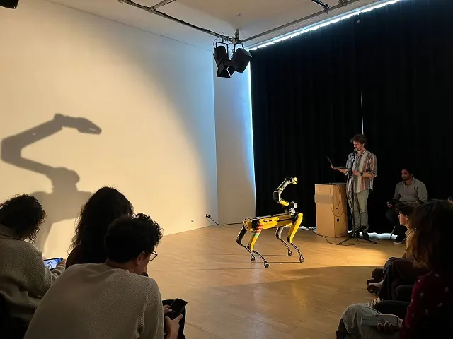

Nieuws ·
Robothond Spot gaat het theater in

Dit bericht uit ons archief verscheen op 21 augustus 2023 op NieuwsNijmegen.nl. Data, tijden en prijzen kunnen inmiddels anders zijn.
Ulrike Quade Company x Go Short x Lindenberg Kunst & Technologie
Een van de bekendste honden én robots ter wereld -robothond Spot- komt op donderdag 7 september naar de Lindenberg. Tijdens Spot: het leven van een robot ziet de bezoeker drie korte films over het leven in dode objecten en ervaart diegene wat zo’n enorme robot voor gevoelens oproept in een theatrale demonstratie met nagesprek. De avond wordt verzorgd door beeldend theatergezelschap Ulrike Quade Company, Go Short en de Lindenberg Kunst & Technologie.
Spot: het leven van een robot
De avond start met drie korte films die zijn geselecteerd en ingeleid door Go Short, waarbij de vraag centraal staat: wanneer kennen we menselijke trekjes of emoties toe aan dode objecten? En is dat terecht? Vervolgens nemen Suze van Miltenburg (onderzoeker bij Ulrike Quade Company) en Sem Carree (YES!DELFT) de bezoeker mee in een theatrale ontdekkingstocht met de robothond Spot. Welke gedachten en eventuele lichamelijke reacties komen er op bij het zien van deze robothond in het theater? Spot voert onder andere een choreografie op, waarbij gebruik wordt gemaakt van bewegingen geïnspireerd op poppenspel, muziek en beeldend theater. In het nagesprek wordt dieper ingegaan op de betekenis van deze robot in het theater en kan er contact worden gemaakt met Spot.
Over robothond Spot
Spot werd ontwikkeld door Boston Dynamics en is een van de bekendste robots ter wereld. Zo gebruikt SpaceX een Spot-robot om inspecties te doen rond het lanceerplatform van zijn rakketten, wordt hij ingezet in Chernobyl om straling te meten en heeft de Nederlandse politie hem ook al eens ingezet voor sporenonderzoek bij drugslabs. Wat Spot bijzonder maakt is dat hij -in tegenstelling tot veel andere robots- goed kan lopen over oneffen terrein. Hij kan o.a. traplopen, obstakels vermijden en zich door nauwe ruimtes bewegen. Hoewel honden heel geliefde huisdieren zijn in ons land, wordt Spot met name ingezet voor industriële fabrieksprocessen. Dat Spot nu naar het theater komt, is een unieke kans om deze robot van dichtbij te aanschouwen.
Over de deelnemers
Suze van Miltenburg, theatermaker, projectleider en poppenspeler bij de Ulrike Quade Company, doet onderzoek naar de theatrale zeggingskracht van de robothond SPOT. YES!DELFT is een toonaangevende tech-incubator in Europa die deel uitmaakt van de TU Delft. Ze verkennen de rol van robotica in de openbare ruimte. Go Short is het belangrijkste kortefilmfestival in Nederland. Dit programma is onderdeel van de Go Short x Lindenberg Kunst en Technologie filmclub.
Praktische informatieSpot: het leven van een robotvindt plaats in de Lindenberg op donderdag 7 september om 20.15 uur. Meer informatie & kaarten:
https://www.delindenberg.com/theater/go-short-x-kunst-en-technologie
Geschikt voor iedereen vanaf 14 jaar.